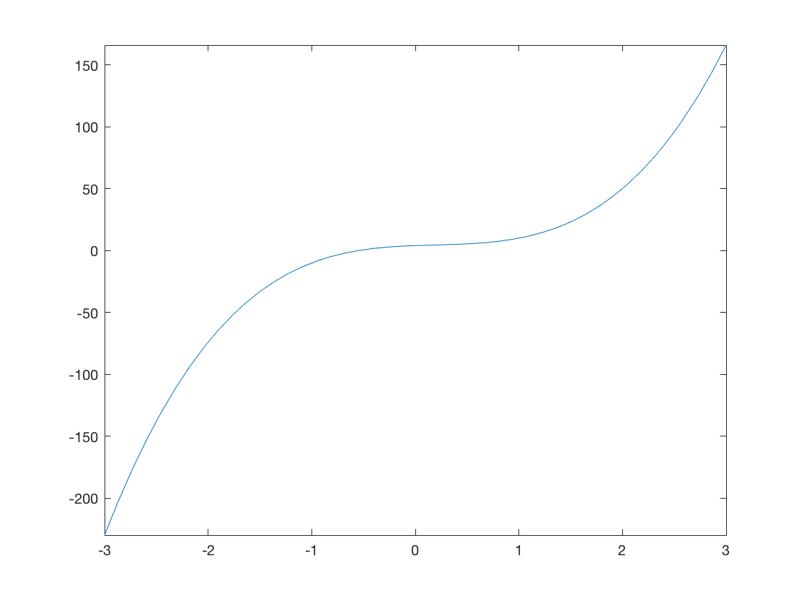
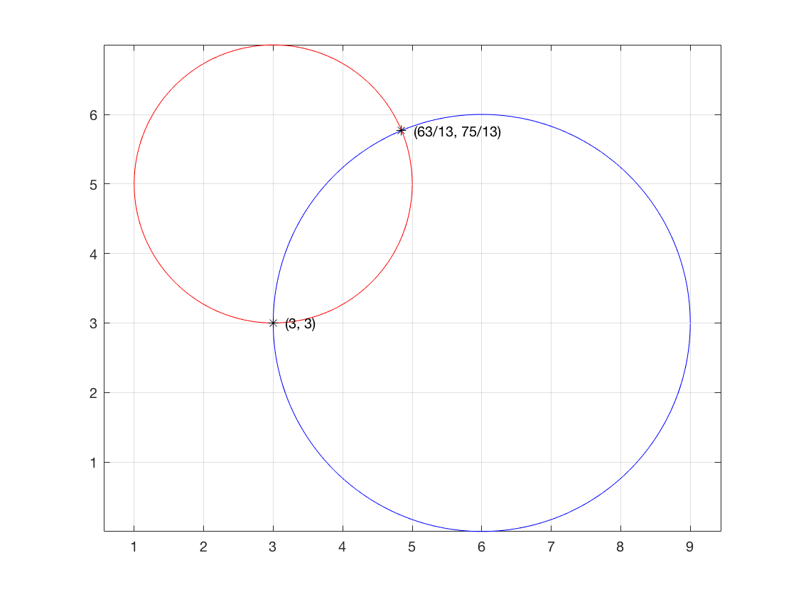

Contents
function plotting
figure
f='7*x^3-4*x^2+3*x+4';
fplot(f,[-3,3]);

Symbolic Processing
Create symbolic variables
syms x y a b c n
Symbolic expansion and simplification of polynomials and elementary functions
expand((x^2+5)* (y^3+2))
simplify((x^3+2*x^2+5*x+10)/(x^2+5))
ans =
x^2*y^3 + 2*x^2 + 5*y^3 + 10
ans =
x + 2
Create symbolic polynomial from vector of coefficients and vice versa
poly2sym([2,6,4])
sym2poly(9*x^2 - 4*x + 5)
ans =
2*x^2 + 6*x + 4
ans =
9.00 -4.00 5.00
Symbolic substitution
E=a*sin(b); subs(E,{a,b},{x,2})
E=x^2+6*x+7; subs(E,x,2)
ans =
x*sin(2)
ans =
23
Equations and systems Symbolic solver
eq1='x+5=0'; solve(eq1)
solve(b^2+8*c+2*b,b)
eq1='6*x+2*y=14'; eq2='3*x+7*y=31';
[x,y]=solve(eq1,eq2)
syms x y
s=solve((x-3)^2+(y-5)^2-4, (x-6)^2+(y-3)^2-9);
s.x
s.y
figure;
theta = 0:0.005:2*pi;
hold on;
plot(3+2*cos(theta),5+2*sin(theta),'r');
plot(6+3*cos(theta),3+3*sin(theta),'b');
plot(s.x,s.y,'k*');
txt1 = [' (' char(s.x(1)) ', ' char(s.y(1)) ')'];
text(s.x(1),s.y(1),txt1)
txt1 = [' (' char(s.x(2)) ', ' char(s.y(2)) ')'];
text(s.x(2),s.y(2),txt1)
axis equal; box on;
grid
ans =
-5
ans =
- (1 - 8*c)^(1/2) - 1
(1 - 8*c)^(1/2) - 1
x =
1
y =
4
ans =
3
63/13
ans =
3
75/13

Symbolic Differences and Approximate Derivatives
syms x n
f = diff(x^n)
f =
n*x^(n - 1)
Definite and indefinite integrals
syms x y
f = int(x^2,2,5)
f = int(x^2)
f =
39
f =
x^3/3